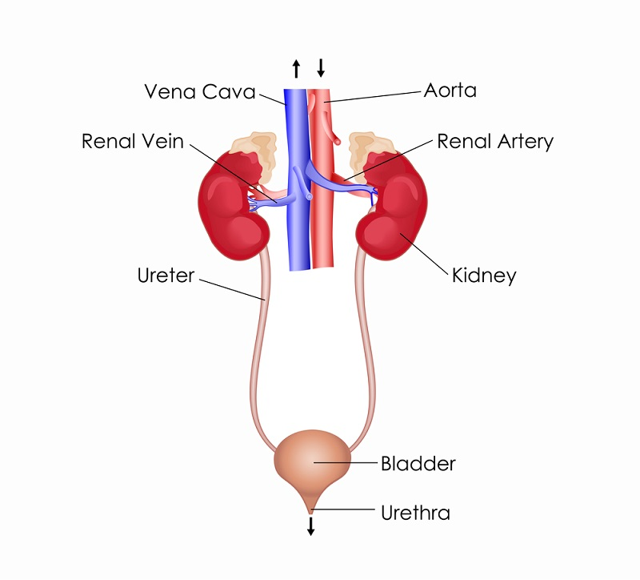

Excretory System
Excretory systems regulate the chemical composition of body fluids by removing metabolic wastes and retaining the proper amounts of water,
salts, and nutrients. It Eliminates excretory products from the body. Components of this system in vertebrates include the kidneys, liver,
lungs, and skin.The excretory system is crucial for the survival of an organism, ensuring that all functions of the body are carried out
effectively and efficiently.
Parts of the Excretory System
- Skin- The skin releases urea, water and salt from the body through perspiration (process of sweating). Perspiration also helps to cool the body.
.
- Lungs- Organ that releases carbon dioxide and water from the process of respiration.
- Liver- The liver stores sugar until it is needed in the blood. Amino acids (Amino acids are molecules that combine to form proteins) release nitrogen
when they are changed into sugars. Nitrogen is changed by the liver into urea. Urea is a maior substance in urine which is released trom the
body through the urethra.
- Kidneys- The main organ of the excretory system. They filter wastes and poisons out of the blood. Your entire blood supply passes
througn the Kidneys about once every 30 minutes.The waste removed here is called urine which is made up of water, urea, and salts.
Facts about the Excretory System
- The human bladder can stretch to hold about 400ml of urine.
- All the blood in our body is filtered 400 times through the kidneys every day.
- Urine stays in the bladder for up to 5 hours before discharge depending on the amount of liquid consumed if the urinary system is healthy.
- Each kidney has about 1,000,000 filtering units, called nephrons.
- Roughly 40 gallons of blood in women and 48 gallons of blood in men are filtered each day.
